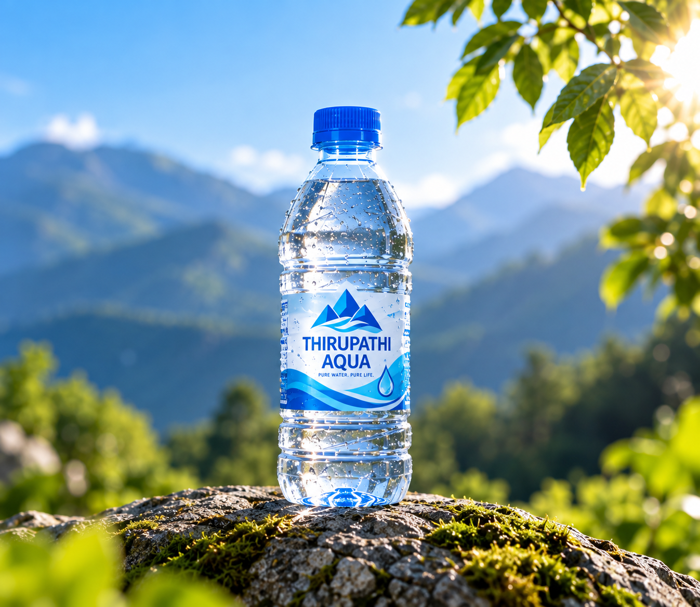
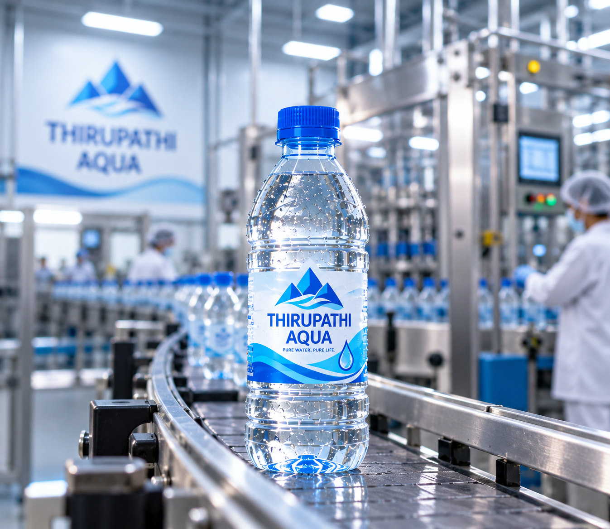

Responsible Thinking
We believe protecting our surroundings begins with thoughtful choices and responsible everyday actions.
PURE WATER. PURE LIFE.

A thoughtful approach to water, production, cleaner surroundings and everyday responsibility.
Sustainability begins with thoughtful choices in the way products are prepared, handled and used.
At THIRUPATHI AQUA, we believe cleaner surroundings, responsible bottle disposal and mindful everyday habits can contribute to a better environment.
We believe protecting our surroundings begins with thoughtful choices and responsible everyday actions.
Proper bottle disposal and recycling where facilities are available can help support cleaner public spaces.
Small responsible actions can help keep homes, workplaces and shared spaces cleaner.

Water is part of everyday life. Thoughtful use, cleaner surroundings and responsible habits all play a role in respecting this essential resource.
Everyday awareness can help reduce unnecessary waste.
Responsible disposal helps keep shared environments cleaner.
Small habits can make a meaningful difference over time.

A responsible production approach begins with organized handling, efficient workflow and attention to how materials move through the facility.
Structured production helps support efficient handling.
Careful movement and preparation support cleaner operations.
Better habits begin with awareness throughout the process.
Cleaner surroundings begin with everyday choices. Together, thoughtful habits can help build a cleaner tomorrow.
Contact Us →